Table des matières
BCF2000
La BCF2000 est un périphérique midi peu cher, dont les potentiomètres sont motorisés. — Par Christoph
C'est le seul appareil dans cette tranche de prix (110 euros) à proposer la motorisation, permettant de faire des allers retours entre les données logicielles et le matériel.
Elle est cependant d'un encombrement certain: 33cm x 10cm x 30 cm, et si vous faites beaucoup de train un peu lourde (2,5 kg).
L'iControl Pro est deux fois plus chère, nettement moins encombrante et plus silencieuse.
Vous êtes beaucoup à utiliser une BCF2000. Pour ma part, depuis que j'ai écrit le midi Mute, je n'utilise plus de surfaces motorisées. En tout cas plus de BCF2000. Trop lourde, bruyante, et encombrante. Les seuls champs pour moi où elle me semble intéressante sont: les concerts, le travail aux masters en création. Mais c'est un point de vue très personnel, et il n'engage que moi. Chaque pratique est différente, et plus les années passent et plus j'apprécie d'avoir des outils légers et versatiles. Donc si vous souhaitez voyager léger, et ne pas trop investir, il est complètement faisable de travailler avec des surfaces de contrôle non motorisées type iCONtrols ou Akai LPD8.
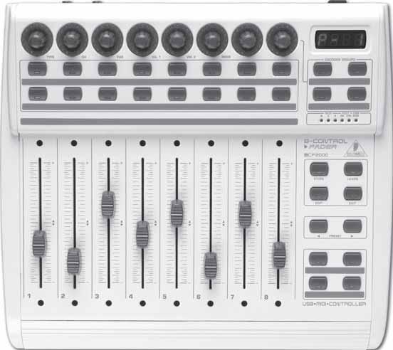
Lien vers la documentation constructeur: http://www.behringer.com/EN/downloads/pdf/BCF2000_P0246_M_FR.pdf
La BCF possède des commandes doublées entre ses presets. Cette attribution est due aux logiciels de musique en home studio pour lesquels elle a été au départ conçue(Cubase, ProTools, etc).
La façon de travailler avec ces logiciels demande souvent d'avoir certaines même commandes reportées sur plusieurs pages de presets. Ce qui ne nous arrange pas avec WhiteCat.
Il faut donc éditer toutes ses commandes pour la rendre pratique (pages de faders, par ex). Pour cela il existe deux solutions :
- A partir de la BCF elle-même via la touche [EDIT]
- A partir d'un éditeur logiciel téléchargeable gratuitement tels B-Control Edit ou BC Manager
La 2ème solution est de loin la plus pratique et la plus efficace car elle permet d'avoir une vision globale de l'ensemble des contrôleurs.
Rapide tour d'horizon
Une BCF propose 10 pages de presets, permettant d'avoir des identifiants différents pour chaque commande ( bouton, potentiomètre, rotatif).
On navigue dans ces pages via les touches Preset.
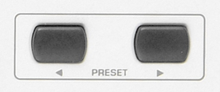
Un preset comprend:
- 8 faders et 16 boutons au dessus des faders
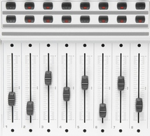
- 4 touches séparées
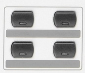
- 4 groupes de 8 encodeurs rotatifs, qui peuvent avoir des identifiants différents, par groupe
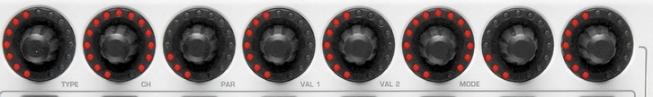
On sélectionne le groupe actif en clickant l'un des ces 4 boutons:
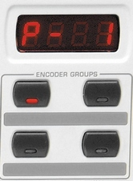
Edition des commandes depuis la BCF
Edition d'un potentiomètre:
* Appuyer sur [EDIT] et laisser maintenue cette touche * Bouger le potentiomètre ou le rotatif désiré * Le numéro de commande s'affiche ( SL 2) * Relâcher [EDIT]
Les rotatifs vont désormais devenir vos instruments de paramétrage. Vous remarquerez que sous chaque rotatif il y a une abréviation.
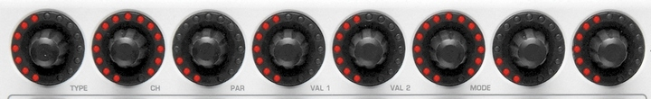
* via les rotatifs, éditer les parémètres de la commande:
- le Type de signal ( TYP ): on affectera pour les potentiomètres et rotatifs CC ( Control Change)
- CH : Channel MIDI ( de 0 à 15 dans WhiteCat, de 1 à 16 dans la BCF)
- PAR : Pitch MIDI ( de 0 à 127 )
C'est à la reconnaissance des identifiants Channel midi et Pitch que WhiteCat réagit, quel que soit le TYPE ( TYP ) de signal émis par la commande.
Ex: Si vous:
- attribuez au potentiomètre 1 de la Behringer les identifiants CH 1 P27
- que vous affectez cette commande à un fader dans WhiteCat
- que vous éditez un rotatif ou un bouton avec les mêmes identifiants CH 1 P27,
le fader dans WhiteCat répondra aussi à celles ci.
- Val1 et Val2 sont les valeurs à zéro et à full du potentiomètre. Attention ! la valeur à full ( VAL2) doit être 127 ( le maximum du midi) et pas 100.
- Mode permet dans le cas d'un Ctrl-Change de changer la courbe DANS la BCF, et le comportement ( ABS pour absolute Rel pour relatif).
Absolu: un fader normal. Relatif: un potentiomètre +/- pour les niveaux.
- ré-appuyer une fois sur EDIT ou sur EXIT pour sortir du mode édition
- appuyer sur [STORE] deux fois pour enregistrer dans l'EPROM de la BCF.
! Si vous ne le faites pas, et que vous changez de preset sur la BCF, toute l'édition des paramètres sera perdue.
Edition d'un bouton:
* Appuyer sur [EDIT] et laisser maintenue cette touche * Appuyer sur le bouton désiré * Le numéro de commande s'affiche ( B 4) * Relâcher [EDIT]
Les rotatifs vont désormais devenir vos instruments de paramétrage. Vous remarquerez que sous chaque rotatif il y a une abréviation.
* via les rotatifs, éditer les parémètres de la commande:
- le Type de signal ( TYP ): généralement un signal de type Key-On ou Note.
Il est possible aussi que le bouton puisse être un Control Change, ce qui est pratique pour flasher un fader, sans passer par le flash de whitecat ( vous envoyez alors avec le bouton une information 0/full au fader ).
- CH : Channel MIDI ( de 0 à 15 dans WhiteCat, de 1 à 16 dans la BCF)
- PAR : Pitch MIDI ( de 0 à 127 )
C'est à la reconnaissance des identifiants Channel midi et Pitch que WhiteCat réagit, quel que soit le TYPE ( TYP ) de signal émis par la commande.
- Val1 et Val2 sont les valeurs à zéro et à full du bouton. Attention ! la valeur à full ( VAL2) doit être 127 ( le maximum du midi) et pas 100.
- Mode permet de paramétrer le comportement du bouton:
- Tog pour TOGGLE, comportement interrupteur ON/OFF: 1 appui ON, un deuxième appui OFF
- Latch pour un appui qui met on et un relachement qui met off
- ré-appuyer une fois sur EDIT ou sur EXIT pour sortir du mode édition
- appuyer sur [STORE] deux fois pour enregistrer dans l'EPROM de la BCF.
! Si vous ne le faites pas, et que vous changez de preset sur la BCF, toute l'édition des paramètres sera perdue.
Copier une assignation sur un autre preset
Appuyer sur [STORE] une fois, utilisez les touches de [PRESET] pour sélectionner le nouvel emplacement. Appuyez sur [STORE] une seconde fois.
Edition des commandes avec B-Control Edit
Ce script java est téléchargeable ici: http://www.behringer.com/FR/Products/BCF2000.aspx
Edition des commandes avec BC Manager
— Par Nico le 2011/09/07 01:48
L'éditeur BC Manager est téléchargeable librement à cette adresse :
http://home.kpn.nl/f2hmjvandenberg281/bcman.html
L'interface est plus austère que l'éditeur officiel B-Control Edit, mais les fonctionnalités de BC Manager
s'avèrent beaucoup plus pratique et efficace.
C'est lui que vous devrez installer si vous souhaitez utiliser le preset MIDI “BCF2000_Nico” fourni dans la version 0.8.2.2 de White Cat.
Une fois BC Manager installé, connectez la BCF en USB, mettez-la sous tension puis ouvrez BC Manager.
Ce dernier devrait automatiquement reconnaitre la BCF et importer la configuration actuellement présente dans votre BCF.
A partir de là, vous avez la possibilité de sauvegarder cette configuration car :
ATTENTION !!! La manipulation qui va suivre et qui permet de charger un layout dans la BCF écrasera définitivement
la configuration actuelle de votre BCF2000 ! Si vous souhaitez retrouver ultérieurement cette configuration, vous
devez la sauvegarder sur votre ordinateur !
Pour sauvegarder votre configuration actuelle :
- Dans BC Manager, cliquez sur le 1er onglet en haut à gauche de la petite fenêtre principale (onglet avec 2 carrés bleus)
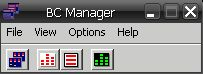
- Une nouvelle fenêtre nommée B-Controls s'affiche avec une ligne correspondant à la configuration actuelle de votre
BCF2000 “lue” par BC Manager à l'ouverture de celui-ci.
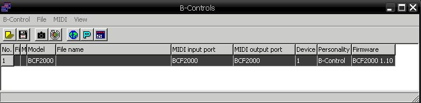
- Sélectionnez cette ligne et allez dans File puis Save As
- Donnez un chemin et un nom à cette configuration et faites Enregistrer
De plus, après maintes recherches sur le net, a priori IL N'EXISTE PAS DE MOYEN DE FAIRE UN RESET D'USINE SUR LA BCF2000 !
D'où l'intérêt de faire une sauvegarde comme expliqué ci-dessus si par exemple vous venez de l'acquérir et que vous souhaitez pouvoir
la réinitialiser ultérieurement.
A partir de là, vous pouvez dorénavant charger dans la BCF le layout correspondant au preset MIDI “BCF2000_Nico”.
Pour charger le layout dans la BCF :
- Dans la fenêtre B-Controls de BC Manager, allez dans File puis Open
- Sélectionnez le fichier “Config_BC_Manager_Nico.syx” situé dans le répertoire Midi_presets de White Cat
(référez-vous au chemin spécifié dans la capture d'écran ci-dessous)
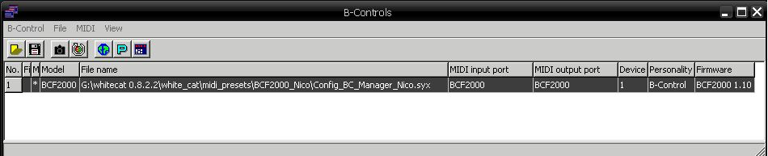
- Cliquez sur Ouvrir
- Allez dans l'onglet MIDI et cliquez sur Send all data
L'afficheur LCD de la BCF devrait se mettre à “tourner”, indiquant qu'elle est entrain de recevoir les signaux en provenance de l'ordinateur.
Ceci peut prendre quelques dizaines de secondes.
- Une fois le transfert terminé, cliquez sur OK
Pour modifier le layout :
- Dans la fenêtre B-Controls de BC Manager, double-cliquez sur la ligne de votre BCF2000 afin d'ouvrir la fenêtre des Presets ci-dessous :
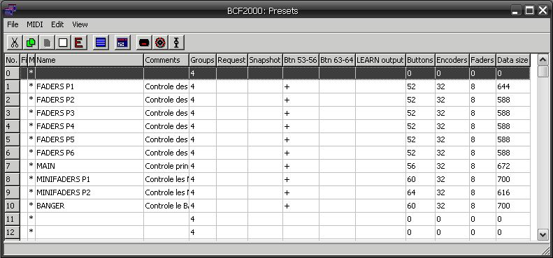
- Sélectionnez ensuite le Preset à modifier puis cliquez sur l'un des 3 icônes en haut à droite de cette fenêtre :
Le 1er icône ouvre la fenêtre de configuration des boutons poussoirs
Le 2ème icône ouvre la fenêtre de configuration des rotatifs
Le 3ème icône ouvre la fenêtre de configuration des faders de la BCF
Ci-dessous voici par exemple à quoi ressemble la fenêtre de configuration des boutons poussoirs :
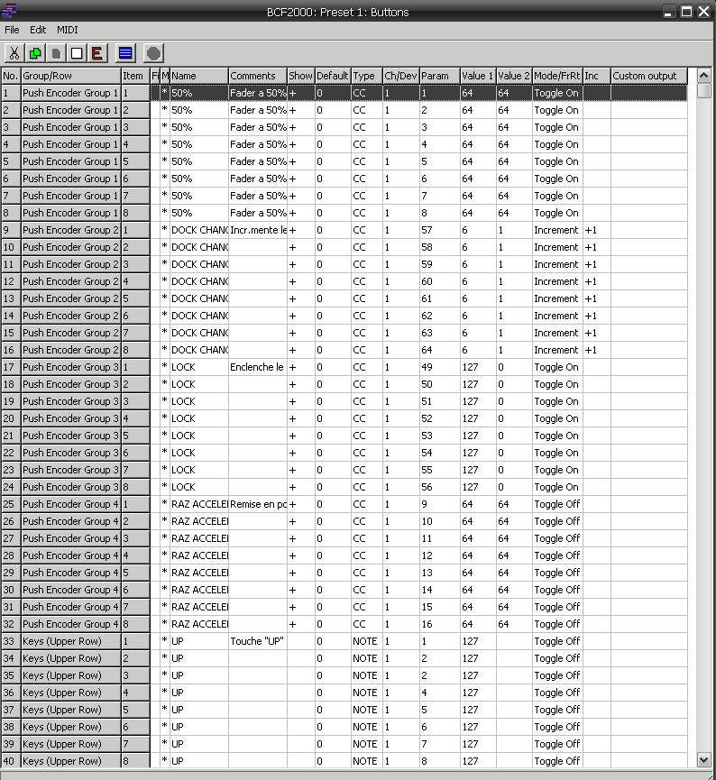
A partir de ces 3 types de fenêtre vous pouvez éditer absolument tous les paramètres du Preset en question.
Je ne vais pas rentrer dans les détails, je vous reporte pour ce faire au manuel téléchargeable également sur le site de BC Manager.
Sachez juste que les outils d'édition dans BC Manager sont très nombreux (Copier/Coller, sélection de plusieurs contrôleurs
puis édition d'un seul paramètre pour ces contrôleurs, etc…). Dites vous que si vous commencez à effectuer des affectations
redondantes et interminables, c'est que vous êtes passés à côté d'une fonction d'édition bien pratique ! 
Malgré sont aspect austère, BC Manager s'avère au final assez intuitif.
Pour information, les 2 seuls types de contrôleurs pris en compte par White Cat sont les Control Change (CC) et les Notes.
Concernant le layout “Config_BC_Manager_Nico.syx”, le nom des contrôleurs ainsi qu'un petit commentaire est souvent là pour
vous aidez à vous y retrouver. N'oubliez pas non plus de consulter le fichier texte BCF2000_Nico.txt présent dans le
répertoire white_cat/midi_presets/BCF2000_Nico/
_
_
Une fois que vous avez modifier les paramètres de votre Preset, il faut les renvoyer dans la BCF :
- Dans la fenêtre Presets, sélectionner le Preset que vous venez de modifier
- Cliquez sur l'onglet MIDI
- Puis cliquez sur Send (icône vert)
- L'afficheur LCD de la BCF doit se mettre à “tourner”, et s'arrêter dès le transfert terminé
Bien que la configuration soit stockée dans la BCF2000 dans une mémoire non volatile, une fois que vous avez fini de modifier les Presets
dans BC Manager n'oubliez pas de ré-enregistrer votre configuration sur le disque dur au cas où vous auriez un soucis avec votre BCF2000.
De ce fait, vous pourrez reconfigurer en quelques secondes une BCF de dépannage qu'une âme charitable vous aura gentiment prêté !
Astuces pour les acheteurs de BCF2000 d'occasion
— Par Olivier40 le 2012/04/04
Voici un joli mode d’emploi pour les personnes ayant acheté une BCF 2000 d’occasion et dont les paramétrages établis sont ceux de l’ancien propriétaire.
Je vais ici vous exposer le cas de figure dans lequel je me suis retrouvé et vous livrer la solution au cas où vous seriez dans le même cas que moi. En espérant vous avoir éclairé et aidé !!
Lorsque vous avez acheté votre BCF d’occasion, et avant tout branchement sur votre PC, allez sur http://www.behringer.com/EN/Support/B-Control-Downloads.aspx pour télécharger :
- les drivers midi correspondant à votre système d’exploitation
- le dernier firmware « BCF2000 Version 1.10 » (dernière version à ce jour)
- L’update Utility pour la mise à jour du firmware
Une fois ces téléchargements faits, branchez votre BCF2000 en USB, le périphérique BCF 2000 sera trouvé et les pilotes s’installeront.
- Ouvrir l’update Utility et ouvrez le fichier BCF2000 version 1.10 et faites ok
- Normalement le firmware se charge dans la BCF2000
Il se peut que la connexion USB s’interrompe, en ce cas:
- le firmware ne sera pas mis à jour
- votre BCF2000 va se bloquer et afficher ceci : « N°OS »
- la BCF2000 ne sera plus reconnue en USB
Solution:
Il va falloir charger le firmware en MIDI, il vous faut donc une interface midi X2 et faire le branchement et manipulation suivante :
- Eteindre la BCF 2000
- MIDI out de votre PC vers le MIDI in de la BCF2000 et MIDI out de la BCF2000 vers le MIDI in de votrePC (il
faut les 2 chemins)
- Appuyer simultanément sur les touches “Store” et “Learn” et tout en les maintenant appuyées, allumer la
machine. La BCF est alors en mode Bootloader
- L’afficheur affiche « LOAD »
- Recommencez l’opération du chargement firmware par « L’Update Utility » et cela sera chargé et votre
connexion USB sera remise.
Arrivé à ce stade, en ce qui me concerne, ma BCF2000 était toujours bloquée et je n’arrivais à rien faire, aucune touche ne répondait et je n’arrivais pas à rentrer dans le GLOBAL SETUP malgré que la BCF2000 soit reconnue dans white cat et que le midi fonctionnait bien !!!
En fait Il faut savoir que, depuis sa version v1.06, la BCF2000 possède 4 pré-réglages appelés « Emulation Modes » :
- Mackie® Control Mapping for Steinberg®* Cubase* SX and Nuendo*[MC C]
- Logic* Control Mapping for Emagic® Logic Audio* [LC]
- Mackie® Control Mapping for Cakewalk®* Sonar* 3 [MCSo]
- Mackie® Baby HUITM Mapping for various applications [bhuI], e.g.Digidesign®* Pro Tools*, Steinberg®*
Cubase* SX/Nuendo* (easier setting than Mackie® Control Protocol)
En fait j’étais en config 4 en mode pour protoools, mode sur lequel travaillait le gars à qui je l’avais acheté !!
La solution:
http://www.behringerdownload.de/BCF2000/BCF2000_Emulation_modes.pdf
Cela se résume à:
- éteindre votre BCF2000
- la rallumer en tenant pressée la touche « CH » sous le rotatif
- attendre que la BCF2000 affiche « MC C » puis « EG » (EDIT GLOBAL MODE)
- A l’aide du 1er rotatif en haut à gauche, choisir son mode a l’aide du 1er rotatif en haut à gauche: USB U-1 à U-4 et les modes Stand Alone S-1 à S-4 . En général il s'agit de l'USB 1.
- faire « EXIT » pour valider
- Eteindre la BCF2000 puis la rallumer en mode BC
Et le tour est joué !!!
Voilà !!!